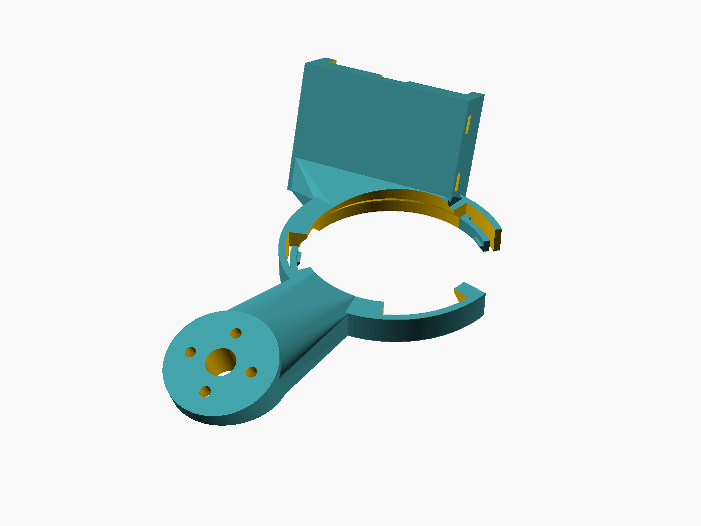
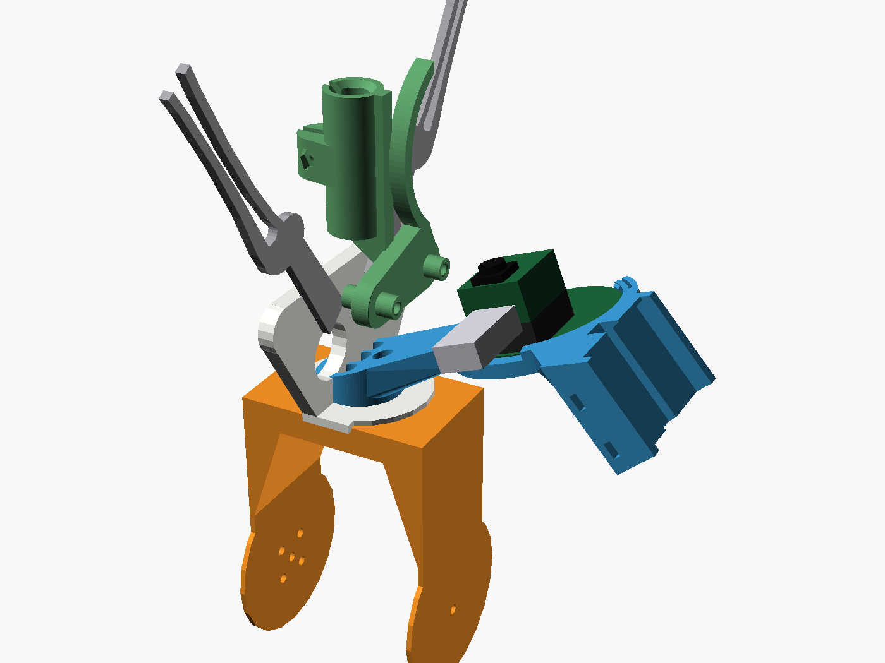

ARDUINO UNO Q / BRACCIO
Printable parts and models
Everything here is generated from hardware/ in the repository. Three licences apply, one per group, and each is stated beside its downloads. The Studio software itself is MIT.


A camera option for pick and place. It holds a Seeed Studio Round Display for XIAO with a XIAO ESP32S3 Sense plugged into the back. The camera looks past the gripper at the point between the claws; the screen faces the other way, towards the people watching. Licence: CC BY-SA 4.0. The right-hand picture includes the GPL-3.0 arm meshes.
Downloads
- braccio_wrist_xiao_round_display.stl: aimed 120 mm in front of the finger mounting face, 59 mm past the closed claws. Tilt 20.7 degrees.
- braccio_wrist_xiao_round_display_near.stl: aimed 90 mm in front. Tilt 25.6 degrees.
- braccio_wrist_xiao_round_display_far.stl: aimed 180 mm in front. Tilt 15.0 degrees.
- braccio_wrist_xiao_round_display_fit_test.stl: the display ring and latches on their own. Print this first.
- braccio_wrist_xiao_round_display.scad: OpenSCAD source. Every dimension is a named value at the top, with where it came from.
- braccio_wrist_xiao_round_display_preview.png and xiao_round_display_on_wrist.png, xiao_round_display_on_wrist_ties.png: pictures.


Parts list
- Seeed Studio Round Display for XIAO (1.28 inch, 43 mm board).
- Seeed Studio XIAO ESP32S3 Sense with its camera board, on soldered pin headers.
- Either 4 x M2 screws, the ones the ESP-EYE wrist mount uses, or 2 x cable ties, 2.5 mm or 3.6 mm wide and at least 250 mm long.
- USB-C cable with slack for the wrist, or a small LiPo with a JST 1.25 plug.
- 1 x 2.5 mm cable tie for the cable or the battery.
- Print the fit piece and press the display into it from the back, screen first. The board's front rim should seat on the bevel and the three latches should click over its back.
- Measure your board against the values marked ESTIMATE in the source. If the fit piece is tight or loose, change
board_fit,display_pcb_thickorboard_slackand export again. - Print the holder as exported: rear rim of the ring on the bed, screen side up. PETG or PLA, 0.2 mm layers, 4 walls, 30 to 40 percent infill, no supports. The only bridge is 12 mm, over the battery plug notch.
Fit it with screws
- Use this where the ESP-EYE wrist mount goes: the hub has the same four M2 holes on a 7 mm radius and the same centre bore.
- Turn the holder so the ring is on the side away from the pen collar, then screw the hub down.
- Press the display in with the XIAO's USB-C end at the gap beside the saddle.
- Tie the cable to the saddle face, leaving a loop long enough for the wrist to roll a quarter turn each way. A small LiPo sits on the same face.
Fit it with cable ties
- Turn the holder round so the saddle meets the wrist body, below the roll joint: pad on one cheek, a jaw round each edge, lip over the top.
- Lay the gripper servo lead in the groove down the middle of the pad, or keep it outside the ties altogether.
- Thread one tie through each tunnel and round the wrist. They sit 6 mm and 20 mm below the roll joint. Pull them tight and trim the tails.
- Tie the cable or the battery to the hub, which now stands clear on the outside.
What the two fittings do differently
Screwed on, the holder turns with the gripper, so the picture stays square to the claws at every roll angle. Tied on, it stays with the wrist: the camera still looks at the same point on the gripper's centre line, from 14 to 21 mm further back depending on the aim distance, but the claws cross the view when the gripper is rolled close to a quarter turn. With ties, use the default or far holder or a right-angle USB-C plug: the near holder brings a straight plug within 1 mm of a fully open claw at a quarter turn.
Software
| Piece | State |
|---|---|
| Studio camera sources | USB cameras, and ESP-EYE boards over HTTP or serial with firmware/esp_eye_camera. That sketch's pin map is for the ESP-EYE; it does not run on a XIAO ESP32S3 Sense as it stands. |
| Camera picture and a result on the round display | Written, in a separate repository: executorch-zephyr-xiao-esp32s3. Zephyr firmware for this board pair that shows the camera crop, the digit an MNIST model reads from it and the inference time. It does not talk to the Studio. |
| Streaming this camera to the Studio | Not written. |
| Showing pick-and-place detections on the screen while streaming | Not written. |
Pencil grips, pen fingers and camera mounts for the Braccio, with their OpenSCAD sources. All of them are licensed under CC BY-SA 4.0, the licence in hardware/pencil-grip/LICENSE, not the MIT licence that covers the software. Sizes are the bounding box in millimetres.
| STL | What it is | Size (mm) | Licence | Source |
|---|---|---|---|---|
| braccio_wrist_xiao_round_display.stl195 kB | Wrist holder for the XIAO round display, aimed 120 mm in front of the finger mount | 60.7 x 103.0 x 29.8 | CC BY-SA 4.0 | braccio_wrist_xiao_round_display.scad |
| braccio_wrist_xiao_round_display_near.stl196 kB | The same holder aimed 90 mm in front | 60.7 x 102.8 x 29.5 | CC BY-SA 4.0 | braccio_wrist_xiao_round_display.scad |
| braccio_wrist_xiao_round_display_far.stl195 kB | The same holder aimed 180 mm in front | 60.7 x 102.8 x 29.9 | CC BY-SA 4.0 | braccio_wrist_xiao_round_display.scad |
| braccio_wrist_xiao_round_display_fit_test.stl92 kB | Fit piece: the display ring and latches only | 50.7 x 51.7 x 6.2 | CC BY-SA 4.0 | braccio_wrist_xiao_round_display.scad |
| braccio_wrist_camera_mount.stl321 kB | Wrist mount for an ESP-EYE | 46.8 x 25.2 x 17.7 | CC BY-SA 4.0 | braccio_wrist_camera_mount.scad |
| braccio_camera_finger.stl709 kB | ESP-EYE cradle beside a whole finger | 38.0 x 17.8 x 61.9 | CC BY-SA 4.0 | braccio_camera_finger.scad |
| braccio_pen_finger_8mm.stl299 kB | Pen collar beside a whole finger, 8 mm bore | 38.0 x 34.7 x 61.9 | CC BY-SA 4.0 | braccio_pen_finger_8mm.scad |
| braccio_pen_finger_10mm.stl308 kB | Pen collar beside a whole finger, 10 mm bore | 38.0 x 36.7 x 61.9 | CC BY-SA 4.0 | braccio_pen_finger_10mm.scad |
| braccio_pencil_grip_8mm.stl307 kB | Split collar in place of a finger, 8 mm bore | 38.0 x 15.3 x 54.5 | CC BY-SA 4.0 | braccio_pencil_grip_8mm.scad |
| braccio_pencil_grip_10mm.stl312 kB | Split collar in place of a finger, 10 mm bore | 38.0 x 17.4 x 54.5 | CC BY-SA 4.0 | braccio_pencil_grip_10mm.scad |
| braccio_camera_mount.stl180 kB | Older camera mount in place of a finger | 38.6 x 30.3 x 53.8 | CC BY-SA 4.0 | none |
| braccio_wrist_camera_bracket.stl235 kB | Older, larger wrist bracket | 56.0 x 44.0 x 49.0 | CC BY-SA 4.0 | none |
| braccio_mount_reference_mm.stl199 kB | The original Braccio finger, used by the sources above | 38.0 x 14.6 x 61.9 | CC BY-SA 4.0 | none |
| Shared source | What it is | Licence |
|---|---|---|
| braccio_grip_lib.scad | Shared clamp and finger geometry | CC BY-SA 4.0 |
| braccio_pencil_grip.scad | Split collar, all bore sizes | CC BY-SA 4.0 |
| braccio_pen_finger.scad | Pen finger, all bore sizes | CC BY-SA 4.0 |
Seven meshes of the arm itself, copied unmodified from lots-of-things/braccio_moveit_gazebo (article) and licensed under the GNU General Public License v3.0. They are simulation visual meshes, one simplified shape per link, in millimetres. They are not print-ready arm parts: servos, screws and the gripper linkage are not modelled. See the README in the folder.
| STL | Link | Size (mm) | Licence |
|---|---|---|---|
| braccio_base.stl91 kB | Base | 106.5 x 106.5 x 97.0 | GPL-3.0 |
| braccio_shoulder.stl172 kB | Shoulder link | 58.0 x 35.0 x 170.0 | GPL-3.0 |
| braccio_elbow.stl172 kB | Elbow link | 58.0 x 35.0 x 170.0 | GPL-3.0 |
| braccio_wrist_pitch.stl61 kB | Wrist pitch link | 57.0 x 49.0 x 85.0 | GPL-3.0 |
| braccio_wrist_roll.stl17 kB | Wrist roll link | 77.2 x 38.0 x 40.0 | GPL-3.0 |
| braccio_left_gripper.stl11 kB | Left gripper blade | 17.7 x 2.5 x 100.9 | GPL-3.0 |
| braccio_right_gripper.stl11 kB | Right gripper blade | 17.7 x 2.5 x 100.9 | GPL-3.0 |
Also in this group, under the same licence because they include the meshes: xiao_round_display_on_wrist.scad, the scene that draws the display holder on the wrist, and the two pictures rendered from it.